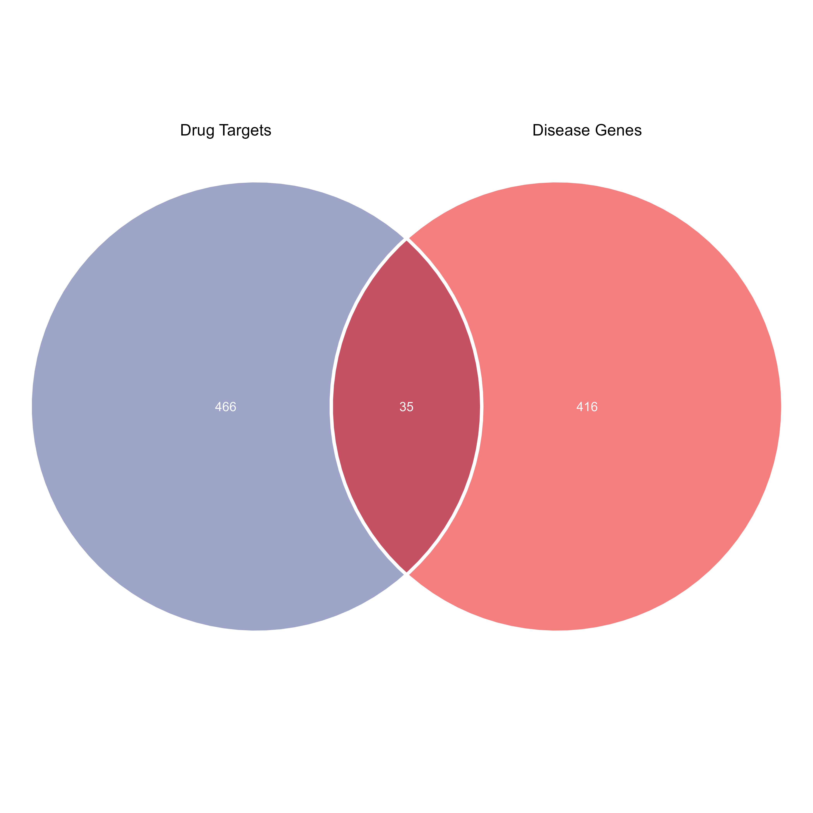

03_common_targets_hub_genes
![]()
Load packages
1 Candidate genes
1.1 Load data
1.2 Candidate genes
1.3 Figure 2A
gene_list <- list(
`Drug Targets` = herb_compound_target$Symbol,
`Disease Genes` = disease_genes_df$Gene
)
p2A <- ggvenn(
gene_list,
fill_color = pal_aaas()(2),
stroke_color = "white",
stroke_size = 1,
set_name_size = 3.5,
text_size = 2.8,
text_color = "white",
show_percentage = FALSE,
show_elements = FALSE
) +
theme(
plot.title = element_text(hjust = 0.5, size=10)
) +
scale_x_continuous(limits = c(-1.8, 1.8), expand = c(0, 0)) +
scale_y_continuous(limits = c(-1.8, 1.8), expand = c(0, 0))
# p2A
# save
ggsave("../main/figures/Figure_2A.png", p2A, width=7, height=7, dpi=600)
write.xlsx(candidate_genes_df, file = "../supplementary/tables/Table_S4.xlsx")
2 Herb-Compound-Target Network (HCT Network)
2.1 Step 1: HCT data
rm(list = ls())
load("../data/processed/09_herb_compound_target.RData")
load("../data/processed/11_candidate_genes.RData")
hct_df <- herb_compound_target %>%
dplyr::filter(Symbol %in% candidate_genes_df$Gene) %>%
dplyr::select(`Medicinal.materials(Chinese.Pinyin.name)`,CID, Symbol) %>%
dplyr:: rename(Herb = `Medicinal.materials(Chinese.Pinyin.name)`,
Compound = CID,
Target = Symbol) %>%
distinct() %>%
arrange(Herb,Target)
cat("\nHerbs: ", paste(unique(hct_df$Herb), collapse = ", "), "\n")
cat("Number of Compounds", length(unique(hct_df$Compound)), "\n")
cat("Number of Targets", length(unique(hct_df$Target)), "\n")
save(hct_df,file = "../data/processed/12_herb_compound_target_network.RData")2.2 Step 2: Build herb-compound-target network
herb_compound <- hct_df %>%
dplyr::select(Herb, Compound) %>%
distinct()
compound_target <- hct_df %>%
dplyr::select(Compound, Target) %>%
distinct()
compound_herbs <- herb_compound %>%
group_by(Compound) %>%
summarise(Herbs = paste(unique(Herb), collapse = ","), .groups = "drop")
target_herbs <- compound_target %>%
left_join(compound_herbs, by = "Compound") %>%
group_by(Target) %>%
summarise(Herbs = paste(unique(unlist(strsplit(Herbs, ","))), collapse = ","), .groups = "drop")
# edges
edges <- bind_rows(
herb_compound %>%
dplyr::rename(source = Herb, target = Compound) %>%
mutate(interaction = "herb_compound"),
compound_target %>%
dplyr::rename(source = Compound, target = Target) %>%
mutate(interaction = "compound_target")
)
# nodes
nodes <- data.frame(id = unique(c(edges$source, edges$target))) %>%
mutate(type = case_when(
id %in% herb_compound$Herb ~ "Herb",
id %in% compound_target$Compound ~ "Compound",
id %in% compound_target$Target ~ "Target",
TRUE ~ "Other"
),
Group = case_when(
type == "Herb" ~ id,
type == "Compound" ~ compound_herbs$Herbs[match(id, compound_herbs$Compound)],
type == "Target" ~ "Target",
TRUE ~ NA_character_
)
)
save(nodes,edges,file = "../data/processed/13_hct_network_data.RData")2.3 Figure_2B. HIT network.
rm(list = ls())
load("../data/processed/13_hct_network_data.RData")
cytoscapePing()
deleteAllNetworks()
createNetworkFromDataFrames(
nodes = nodes,
edges = edges,
title = "HCT_Network",
collection = "HCT_Network"
)
# layout
layoutNetwork("force-directed")
# style
style_name <- "HCT_Style_By_Nodes_Type"
try(deleteVisualStyle(style_name), silent = TRUE)
# default style
defaults <- list(
NODE_SHAPE = "RECTANGLE",
NODE_SIZE = 30,
NODE_FILL_COLOR = "#CCCCCC",
NODE_LABEL_FONT_FACE = "Arial,plain,12",
EDGE_WIDTH = 0.5,
EDGE_STROKE_COLOR = "#E0E0E0",
EDGE_TRANSPARENCY = 200
)
# mapping style
mappings <- list(
# node shape
mapVisualProperty(
visual.prop = 'node shape',
table.column = 'type',
mapping.type = 'd',
table.column.values = c("Herb", "Compound", "Target"),
visual.prop.values = c("DIAMOND","ELLIPSE", "RECTANGLE")
),
# node color
mapVisualProperty(
visual.prop = 'node fill color',
table.column = 'type',
mapping.type = 'd',
table.column.values = c("Herb", "Compound", "Target"),
visual.prop.values = c("green", "red", "blue")
),
# node size
mapVisualProperty(
visual.prop = 'node size',
table.column = 'type',
mapping.type = 'd',
table.column.values = c("Herb", "Compound", "Target"),
visual.prop.values = c(30, 20, 30)
),
# node label
mapVisualProperty(
visual.prop = 'node label',
table.column = 'name',
mapping.type = 'p'
),
mapVisualProperty(
visual.prop = 'node label color',
table.column = 'type',
mapping.type = 'd',
table.column.values = c("Herb", "Compound", "Target"),
visual.prop.values = c("#000000", "#000000", "#000000")
)
)
# apply style
createVisualStyle(
style.name = style_name,
defaults = defaults,
mappings = mappings
)
setVisualStyle(style_name)
# Figure_2B.pdf / Figure_2B.png
2.4 Step 4: Degree
hct_cytohubba <- read.csv("../results/hct_cytohubba.csv")
herb_degree <- hct_cytohubba[1:2,c("node_name","Degree")] %>%
arrange(desc(Degree))
herb_degree
compound_degree <- hct_cytohubba[3:27,c("node_name","Degree")] %>%
arrange(desc(Degree))
compound_degree
target_degree <- hct_cytohubba[28:nrow(hct_cytohubba),c("node_name","Degree")] %>%
arrange(desc(Degree))
target_degree
save(hct_cytohubba, target_degree, compound_degree, herb_degree, file = "../data/processed/14_hct_degree.RData" )3 PPI network
rm(list = ls())
# score >=0.4 --> 0.7
ppi_list <- fread("../data/raw/string/string_interactions_short.tsv") %>%
dplyr::select(`#node1`, node2, combined_score) %>%
dplyr::filter(combined_score >= 0.4) %>%
dplyr::rename(source = `#node1`, target = node2, score = combined_score)
save(ppi_list,file = "../data/processed/15_ppi_list.RData")3.1 Step 2: PPI network visualization
# Ping Cytoscape
cytoscapePing()
try(deleteNetwork("PPI_Network"), silent = TRUE)
deleteAllNetworks()
createNetworkFromDataFrames(
edges = ppi_list,
title = "PPI_Network",
collection = "PPI_Network"
)
nodes <- data.frame(id = unique(c(ppi_list$source, ppi_list$target)))
nodes$degree <- sapply(nodes$id, function(x) {
sum(ppi_list$source == x | ppi_list$target == x)
})
# Create based on degree values, node attributes must be synchronized into Cytoscape first
loadTableData(nodes, data.key.column = "id", table = "node")
# New style
try(deleteVisualStyle("PPI_Style_By_Nodes_Degree"), silent = TRUE)
style_name <- "PPI_Style_By_Nodes_Degree"
# default style
default_lists <- list(
NODE_SHAPE = "ellipse",
NODE_SIZE = 50,
NODE_FILL_COLOR = "#88CCEE",
# NODE_LABEL_FONT_SIZE = 12,
NODE_LABEL_FONT_FACE = "Arial,plain,12",
EDGE_WIDTH = 0.5,
EDGE_STROKE_COLOR = "#E0E0E0",
EDGE_TRANSPARENCY = 200
)
# getVisualPropertyNames()
mapping_lists <- list(
# Node size: small degree → 20, large degree → 100
# mapVisualProperty(
# visual.prop = 'NODE_SIZE',
# table.column = 'degree',
# mapping.type = 'c',
# table.column.values = c(min(nodes$degree), max(nodes$degree)),
# visual.prop.values = c(20, 100)
# ),
# Node fill color mapping: small degree → light yellow, large degree → red
mapVisualProperty(
visual.prop = 'NODE_FILL_COLOR',
table.column = 'degree',
mapping.type = 'c',
table.column.values = c(min(nodes$degree), max(nodes$degree)),
visual.prop.values = c("#ecddbb", "#cd6767")
),
mapVisualProperty(
visual.prop = 'EDGE_WIDTH',
table.column = 'score',
mapping.type = 'c',
table.column.values = c(min(ppi_list$score), max(ppi_list$score)),
visual.prop.values = c(1, 8)
),
mapVisualProperty(
visual.prop = 'EDGE_STROKE_UNSELECTED_PAINT',
table.column = 'score',
mapping.type = 'c',
table.column.values = c(min(ppi_list$score), max(ppi_list$score)),
visual.prop.values = c("#c2c5ce", "#3b4360")
)
)
createVisualStyle(
style.name = style_name,
defaults = default_lists,
mappings = mapping_lists
)
setVisualStyle(style_name)
# Node Label
setNodeLabelMapping(table.column = 'id', style.name = style_name)
layoutNetwork("force-directed")3.2 Figure 3C: PPI network

4 Identification of Hub Genes
- input: cytohubba_res.csv
4.1 Step 1: Cytohubba
rm(list = ls())
cytohubba_res <- read_csv("../results/ppi_cytohubba.csv") %>%
column_to_rownames(var = colnames(.)[1])
# cytohubba
top_n <- 10
n <- min(top_n, nrow(cytohubba_res))
top_mcc <- rownames(cytohubba_res[order(cytohubba_res$MCC, decreasing = TRUE), ])[1:n]
top_degree <- rownames(cytohubba_res[order(cytohubba_res$Degree,decreasing = T),])[1:n]
top_mnc <- rownames(cytohubba_res[order(cytohubba_res$MNC,decreasing = T),])[1:n]
cytohubba_genes <- Reduce(intersect, list(top_mcc, top_degree, top_mnc))
cytohubba_genes4.2 Figure 3D
- input: Figure_3D_a, Figure_3D_b,Figure_3D_c
# Figure 3D_d
gene_list <- list(
MCC = top_mcc,
MNC = top_mnc,
Degree = top_degree
)
p <- ggvenn(
gene_list,
fill_color = pal_aaas()(3),
stroke_color = "white",
stroke_size = 0.5,
set_name_size = 2.5,
text_size = 2.5,
text_color = "white",
show_percentage = FALSE
) +
theme(plot.title = element_text(hjust = 0.5, size=4))
ggsave("../main/figures/Figure_3D_d.pdf", p, width=1.38, height=1.38, units="in", dpi=300)
# Figure 4B
total_width_cm <- 7
dpi <- 300
px_per_cm <- dpi / 2.54
files <- c(
"../main/figures/Figure_3D_a.pdf",
"../main/figures/Figure_3D_b.pdf",
"../main/figures/Figure_3D_c.pdf",
"../main/figures/Figure_3D_d.pdf"
)
labels <- c("a", "b", "c", "d")
label_size <- 8
pdfs <- list()
for (i in seq_along(files)) {
img <- image_read_pdf(files[i], density = 300)
img <- image_annotate(img, labels[i],
gravity = "northeast",
location = "+5+5",
size = label_size,
weight = 700,
color = "black")
pdfs[[i]] <- img
}
row1 <- image_append(c(pdfs[[1]], pdfs[[2]]), stack = FALSE)
row2 <- image_append(c(pdfs[[3]], pdfs[[4]]), stack = FALSE)
combined <- image_append(c(row1, row2), stack = TRUE)
image_write(combined, "../main/figures/Figure_3D.pdf", format = "pdf")
# image_write(combined, "../main/figures/Figure_3D.png", format = "png", density = dpi)4.3 Step 2: MCODE
4.4 Step 3: hub_genes
# unicon
hub_genes <- union(cytohubba_genes,mcode_genes)
hub_genes_df <- cytohubba_res[rownames(cytohubba_res) %in% hub_genes, c("MCC","MNC","Degree")] %>%
rownames_to_column("Gene")
hub_genes_df
hub_genes <- hub_genes_df$Gene
hub_genes
save(hub_genes_df,hub_genes,file = "../data/processed/16_hub_genes.RData")
write.xlsx(
list(hub_genes = hub_genes_df),
"../supplementary/tables/Table_S5.xlsx"
)5 Figure 3
total_width_cm <- 14
dpi <- 300
px_per_cm <- dpi / 2.54
total_width_px <- round(total_width_cm * px_per_cm)
ratios_row1 <- c(1, 1)
ratios_row2 <- c(1, 1)
width_row1_left <- round(total_width_px * ratios_row1[1] / sum(ratios_row1))
width_row1_right <- round(total_width_px * ratios_row1[2] / sum(ratios_row1))
width_row2_left <- round(total_width_px * ratios_row2[1] / sum(ratios_row2))
width_row2_right <- round(total_width_px * ratios_row2[2] / sum(ratios_row2))
ratio <- c(width_row1_left,width_row1_right,width_row2_left,width_row2_right)
files <- c(
"../main/figures/Figure_3A.pdf",
"../main/figures/Figure_3B.pdf",
"../main/figures/Figure_3C.pdf",
"../main/figures/Figure_3D.pdf"
)
labels <- c("A", "B", "C", "D")
label_size <- 12
pdfs <- list()
# for (i in seq_along(files)) {
# img <- image_read_pdf(files[i], density = 300)
# # img <- image_read(files[i])
# img <- image_resize(img,ratio[i])
# img <- image_annotate(img, labels[i],
# gravity = "northwest",
# location = "+10+10",
# size = label_size,
# weight = 700,
# color = "black")
# pdfs[[i]] <- img
# }
for (i in seq_along(files)) {
ext <- tolower(tools::file_ext(files[i]))
img <- switch(ext,
pdf = {
image_read_pdf(files[i], density = 300)
},
svg = {
image_read_svg(files[i], width = ratio[i])
},
png = , jpg = , jpeg = {
image_read(files[i])
},
stop("Unsupported file format: ", ext)
)
img <- image_resize(img, paste0(ratio[i], "x"))
img <- image_annotate(img, labels[i],
gravity = "northwest",
location = "+10+10",
size = label_size,
weight = 700,
color = "black")
pdfs[[i]] <- img
}
row1 <- image_append(c(pdfs[[1]], pdfs[[2]]), stack = FALSE)
row2 <- image_append(c(pdfs[[3]], pdfs[[4]]), stack = FALSE)
combined <- image_append(c(row1, row2), stack = TRUE)
image_write(combined, "../main/figures/Figure_3.pdf", format = "pdf")
# image_write(combined, "../main/figures/Figure_3.png", format = "png", density = dpi)